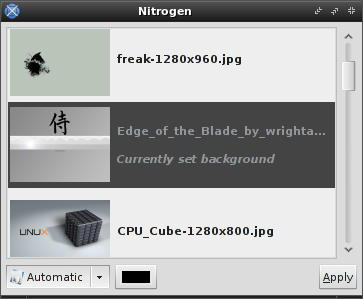

++Customization & Tips++
:: Opening Pandora's Box -- Delving into Openbox ::
[Introduction]
As a user of LXDE(Lightweight X11 Desktop), I had already been accustomed to using and configuring Openbox, which it uses as its adopted window manager, so it wasn't much of a thing for me to switch to using stand-alone OpenBox. If you're wondering, I switched mainly because of the general lack of maturity I felt from its components(namely LXPanel and LXTask).
Note that this is *NOT* a complete how-to on setting up Openbox, just a brief overview of some useful things I did that I felt other users might benefit from knowing. With that said, some common file locations:
Autostart: ~/.config/openbox/autostart.sh
General: ~/.config/openbox/rc.xml
Root-menu: ~/.config/openbox/menu.xml
For those [somewhow] unfamiliar, Openbox is minimal and sharply-quick window manager(WM) for X, originally being based on Blackbox but now rewritten. Probably its most distinguishing feature(or at least most immediately recognizable) is the "root menu" that opens up upon right-clicking the desktop.
Openbox is a window manager, that is to say, it's merely a program that controls the drawing/placement of windows and provides some basic necessities for desktop usage(this differs from a desktop environment, like Gnome or KDE, in that it is stand-alone component and only manages the windowing aspect the desktop and mostly leaves out other "fluffy" aspects.
[Wallpaper]
What you'll probably want to do first(okay, "want", not "need") is setup a wallpaper. Personally, I use Nitrogen. Once installed, it's just a matter of running:
nitrogen ~/Pictures(or whereever your image directory is located)
Double-click an entry to preview it, and click "Apply" to save your configuration. If you want to preserve this wallpaper to always show up when you start Openbox, add this to your autostart.sh:
nitrogen --restore &
This effectively has Nitrogen restore the preserved wallpaper and run in the background.
[Root-menu]
You pretty much have two options when it comes to configuring the "root menu" or right-click menu featured in Openbox--you can opt for the "manual" approach of editing your rc.xml by hand, or you can use obmenu as a GUI alternative.
Using obmenu would be as simple as running it and making sure you first open the right file by clicking the Open button, then navigating to [typically] ~/.config/openbox/rc.xml.
Its interface is pretty much self-explanatory, but if you run into any trouble, you can consult the documentation here.

Panel
The final step you'll need to take to make your Openbox desktop fully-functional, IMO, is adding a panel. There are a number of popular apps out there, but I find that pypanel goes extremely well with my Openbox setup.
The first thing you'll want to take a look at in regard to this program is it's configuration file, located at ~/.pypanelrc Configuration is extremely straight-forward, but if you want a nice-looking setup to play around with immediately, here's mine:
[my .pypanelrc] (Place in your home(~/) directory -- DON'T FORGET THE '.')
Final Product
The end-result, with my pypanelrc file, should be something like this:

Obviously, you can tweak everything to your personal needs and preferences, but this setup should provide a nice foundation to build upon.
Great place for minimalistic wallpapers: Customize.org